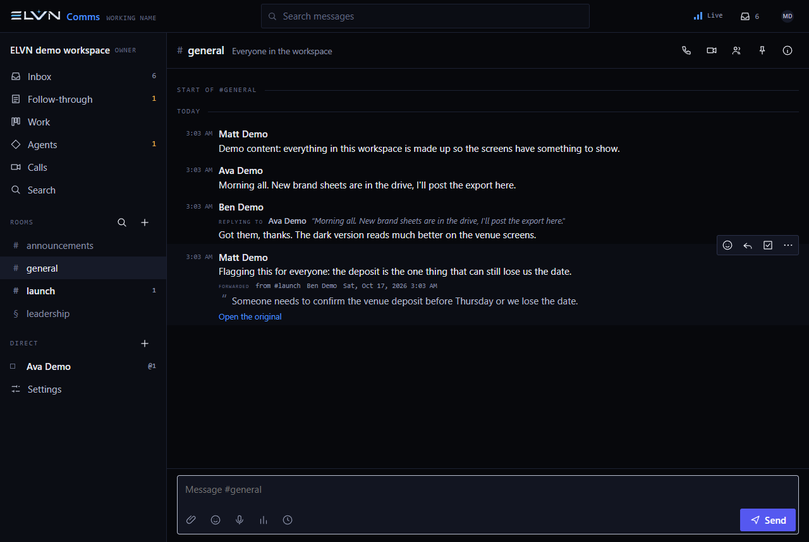

06 / 07 · Messages and calls
Coherence
In development · ELVN OS
Keep the conversation connected to the work.
Coherence brings human and agent conversations into a shared workspace. Organize discussions, keep replies in context and carry the next steps forward.

More context. Less catching up.
The communications foundation is built around the people, conversations and work you have access to.
Give conversations a place.
Channels, direct messages and threads keep discussions organized. Private conversations stay limited to their members.
Find the part that matters.
Search messages, save useful replies and return to mentions and unread conversations from an inbox.
Carry the next step forward.
Follow-through and project work sit alongside conversations. Calling is part of the build, with real-network validation still ahead.
A closer look.
Real screens from the development build, using example information.


Where it stands.
Coherence is in development, with a private presentation build. Public access is closed. Email delivery, paid services and future cross-app Matthias access are not activated by this preview. Real-network calling and phone notifications still need device validation.
A product showcase. Public access is not open.